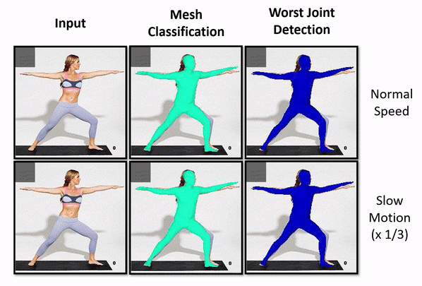
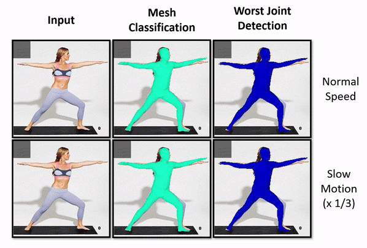

Error Estimation for Single-Image Human Body Mesh Reconstruction
Faculty of Science
University of Ontario Institute of Technology
2000 Simcoe St. N., Oshawa ON L1G 0C5

Introduction
Human pose and shape estimation methods often struggle in situations where body parts are occluded, and they lack the ability to recognize when their predictions are incorrect. This limitation poses significant challenges in human-robot interaction scenarios, where reliable pose estimation is crucial. In our research, we address this problem by proposing a method that combines information from popular methods like OpenPose and SPIN. Our approach effectively identifies the least reliable regions on the predicted human body mesh, providing valuable insights. We have evaluated our method on multiple datasets, including 3DPW, 3DOH, and Human3.6M, demonstrating its effectiveness in identifying inaccurate regions. Confidence scoring for recovered meshes is an essential aspect of human-robot interaction scenarios, enabling robots to make informed decisions. By detecting unreliable regions, a robot can halt its operation or adjust its viewpoint for better reconstruction. Our method offers a comprehensive solution by highlighting these unreliable parts, as shown in Figure 1.
Model Architecture
Figure 2 depicts the proposed method for assigning an error estimate to different regions of the reconstructed human body mesh. The process consists of three steps: 1) utilizing the SPIN model to estimate “2D” joint locations, 2) employing the OpenPose model to recover 2D joint locations, and 3) calculating the difference between the 2D joint estimates from SPIN and OpenPose to derive a confidence score for the mesh. When both models accurately estimate a joint position, the estimated coordinates are close to each other and adjacent to the ground truth. Conversely, when the models’ estimations are inaccurate, we anticipate dissimilar joint position estimates, resulting in a greater difference between the models’ outputs. Leveraging this disparity, we can estimate the mesh error. Our proposed approach simultaneously examines all joints to classify the mesh and identify the most problematic joint. To achieve this, we employ two multi-linear perceptron networks that utilize the Euclidean distance (ED) metric for mesh classification and worst joint identification, respectively.
Results
Our model is versatile and can be applied to both image and video inputs. To further showcase its capabilities, we provide additional outputs. In the GIF below, the dancer’s fast movements cause blurriness in the frames, leading to inaccurate hand estimations by the SPIN model. However, our model, as depicted in Figure 3, successfully detects the erroneous mesh and consistently identifies the hands as the least reliable part. In the final example, the presence of a moving occluder introduces complexity, yet our model excels in detecting inaccurate meshes and accurately pinpointing the least reliable regions in most cases.
 

Code
Code is available at https://github.com/Hamoon1987/meshConfidence. Please cite the following article if you use this code. Thank you.
Publication
For technical details please look at the following arXiv manuscript